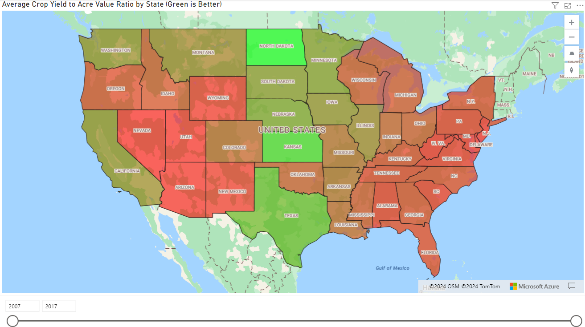

Using USDA Crop Land value and Crop Yield to determine where to invest into Crop Land.
Github Link
Power BI Report
Investigate the relationship between agricultural cropland value and crop yield. The target audience or stakeholders for this project are prospective crop land investors looking to choose the best state to invest in crop land. Some of the questions I wanted to investigate include: What are the states with high crop yield to acre value ratios? What are the trends in both key metrics over time? Which States and Regions had the highest Acre Values, Crop Yields and Crop Yield to Acre Value Ratios? I also wanted a map of the states with a gradient of Acre Value and Crop Yield to get an intuitive visual of the patterns. Acre Value, gathered from Kaggle.com, does not contain most of New England as these states weren't in the dataset. Crop Yield was gathered from USDA's National Agricultural Statistics Service(NASS) Quick Stats, which is their self service data mart. The time frame of the data is from 2007-2017.
I am the most comfortable working with python, so that's where I began. I used it to ingest the downloaded data, clean it, and load it into the SQL server. The first thing I did was download the Acre Value data from Kaggle and the Crop Yield data from USDA's NASS Quick Stats, both as csv files. After importing the necessary libraries, I ingested the csv data into a DataFrame, removed unnecessary rows and columns, removed any NA/Null values and reset the index for the next steps for the three Acre Value data.
import pandas as pd
pd.set_option('display.max_columns', None)
from sqlalchemy import *
# Constant of Region Names
REGIONS= ("Northeast", "Lake", "Corn Belt", "Northern Plains", "Appalachian", "Southeast", "Delta",
"Southern Plains", "Mountain", "Pacific")
# Pull in cropland data
cropland_df = pd.read_csv('data\Combined Data - Cropland.csv', header = 4)
# Remove junk columns
cropland_df.drop(columns = ['2','h','2016-2017'],index=[0,1],inplace=True)
# Remove random characters
cropland_df.replace('[1234567890]/', '', regex=True,inplace=True)
# Drop NA values and reset index
cropland_df.dropna(inplace=True)
cropland_df.reset_index(drop=True,inplace=True)
cropland_df.head(4)
Taking a look at the data format showed that it needs to be melted such that each row contains the state, region, year, and acre value. So, next I extracted the indices of all rows with a region instead of a state along with the last row and assigned them to a list to do the melt mentioned above.
# Get the rows for each region
cropland_reg = cropland_df[cropland_df['Region and state'].isin(REGIONS)]
# Make a list of the indices of each region's row
cropland_list = list(cropland_reg.index)
# Append the last row of each dataframe
cropland_list.append(cropland_df.shape[0])
cropland_list
Using the list of indices, I created a dictionary of each region name along with the first and last state's index in that region. (i.e. cropland_df contains 'Northeast' states in indices 1 through 7.)
# Instantiate index dictionaries for each dataframe
cropland_idx_dict = {}
# For the each element of cropland_list, create a new entry in the index dictionary with the first and last
index of that region's states (i.e. 'Northeast': [1, 7])
for i in range(0,len(cropland_list)-1):
cropland_idx_dict[REGIONS[i]] = [cropland_list[i]+1,cropland_list[i+1]]
cropland_idx_dict
Renamed the "Region and state" column to "State" and created a new column called "Region". Iterated through the index dictionary's keys, which are region names, created in the previous block to assign the 'Region' value to all the rows, then dropped all rows with index in region index list so the remaining rows only have state names in newly renamed "State" column. Finally, I dropped the last row in each table, which had the US cumulative data and reset the indices. This process was completed for each DataFrame.
# Rename 'Region and state' column to 'State' and create new 'Region' Column
cropland_df.rename(columns={'Region and state':'State'},inplace=True)
cropland_df['Region'] = ''
# for each region, assign the region's name to 'Region' Column
for i in cropland_idx_dict.keys():
cropland_df.loc[cropland_idx_dict[i][0]:cropland_idx_dict[i][1], 'Region'] = i
# Drop all rows that contain the regional data
cropland_df.drop(index=cropland_list[:-1],inplace=True)
# Drop row that contains cumulative US data and reset index
cropland_df.drop(index=[53],inplace=True)
cropland_df.reset_index(drop=True,inplace=True)
Melted the DataFrames so that the State and Region columns remain untouched, and each row only has one Acre Value and a corresponding year. (i.e. "California", "Pacific", "2017", "2700.0"). Then cleaned up the DataFrame (forcing Acre Value to be a numeric, and dropping any NA values), added Land Use column and reset index one final time for each dataframe. Finally, all three dataframes are concatenated into "df".
# Melt dataframe so each row only has one year and one acre value, convert acre value to numeric, and drop all
NAs
cropland = pd.melt(cropland_df,id_vars=['State','Region'],var_name='Year',value_name='Acre Value')
cropland['Acre Value'] = pd.to_numeric(cropland['Acre Value'],errors='coerce')
cropland.dropna(inplace=True)
# Assign Land use as Cropland and reset index
cropland['Land Use'] = 'Cropland'
cropland.reset_index(drop=True,inplace=True)
The last python step for Acre Value was to establish an ODBC connection to the SQL server on my local machine ('ADHARSHVANCHI-P'), and using the pandas to_sql function to load the data into its table. Just as a check, I run a quick query to trim any whitespaces at the beginning or end of the data.
# Initalize SQL Connection
metadata = MetaData()
engine = create_engine("mssql+pyodbc://ADHARSHVANCHI-P/Agricultural_Land_Data?driver=ODBC+Driver+17+for+SQL+
Server")
# Load final table into SQL as agricultural_landvalue
cropland.to_sql('agricultural_landvalue',con=engine,if_exists='replace',index=False)
# Update table by removing leading and trailing whitespaces
with engine.connect() as connection:
connection.execute(text("UPDATE agricultural_landvalue SET state = TRIM(state)"))
connection.commit()
For Crop Yield, I ingested the data, filtered only for the columns that are relevant to my analysis, dropped any NA/Null values, reset the index, renamed the 'Value' column to 'Crop Yield' for ease of use, converted the all upper case state names (i.e. 'NEVADA') to match the title case of the Acre Value dataset (i.e. 'Nevada') and loaded the data into SQL with the same method as the Acre Value dataset.
cropprod_df = pd.read_csv('data\Crop Production in $.csv')
cropprod_df = cropprod_df[['Year','State','Value']]
cropprod_df.dropna(inplace=True)
cropprod_df.reset_index(drop=True,inplace=True)
cropprod_df.rename(columns={'Value':'Crop Yield'},inplace=True)
cropprod_df['State'] = cropprod_df['State'].apply(str.title)
cropprod_df.to_sql('crop_production',con=engine,if_exists='replace',index=False)
Once both Datasets were loaded into the Database "Agricultural Land Value", I created a new view named "VW_Ag_Land" which joined agricultural_landvalue and crop_production on columns year and state. This view is what was pulled into PowerBI to create the visuals.
This page shows all the available data as a scatterplot with Acre Value on the x-axis and Crop Yield on the y-axis. On the right side, there are slicers to filter states and years. Looking at the visual, we can see that California is notably higher in both Crop yield and Acre Value. Conversely, New Jersey has very high acre values for very low crop yields, making it a poor investment candidate.
This visual is to rank the states by Acre Value, Crop Yield and Crop Yield to Acre Value Ratio. The top three candidate states I would recommend based on the insights on the third graph would be North Dakota, Texas and Kansas as these states have the highest crop yield to acre value ratios.
The top graph shows Average Acre Value over Time. As the first page indicated, New Jersey is the highest valued throught the entire time frame. Hovering over the graph shows a table of the top 5 states by Average Acre Value for that given year.
The middle graph shows crop value over time. Here we see Calidfornia along with many of the bread basket states, which is to be expected. Hovering here shows a similar custom tooltip, but with Average Crop Yield.
The bottom graph shows Crop Yield/Acre Value as a ratio to determine, on average, which states have the highest return on land value. Surprisingly to me, North Dakota led the pack from 2007-2013, and continued to be top three for the remainder of the time frame. This graph is the most useful in determining what states to consider for cropland investment. Looking at the states I recommend based on the bar graph, we see that all three of them have been in the top 5 over the entire timeframe of the dataset.
The States Slicer on the right lets users compare their selection of states over the timeframe.
This map visualizes the geographic distribution of the Crop Yield to Acre Value ratio with a year slicer to tunnel down in user specified time windows. As noted in the project overview, most of New England is not part of the dataset, as visible here.
Note: The map does not appear in the link to the Power BI report.
What are the trends in both key metrics over time?
Removing California and New Jersey from the visuals on Page 2 shows that Crop Yield is generally stable while Acre Value is slightly increasing over time.
Which States and Regions had the highest Acre Values, Crop Yields and Crop Yield to Acre Value Ratios?
Acre Value:
Crop Yield:
Crop Yield to Acre Value: